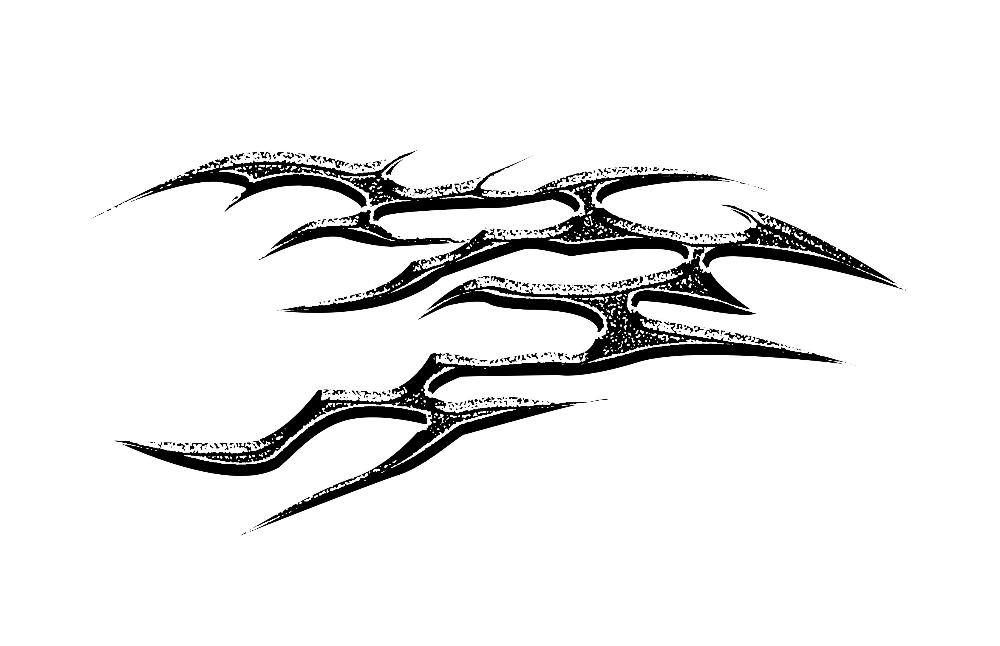
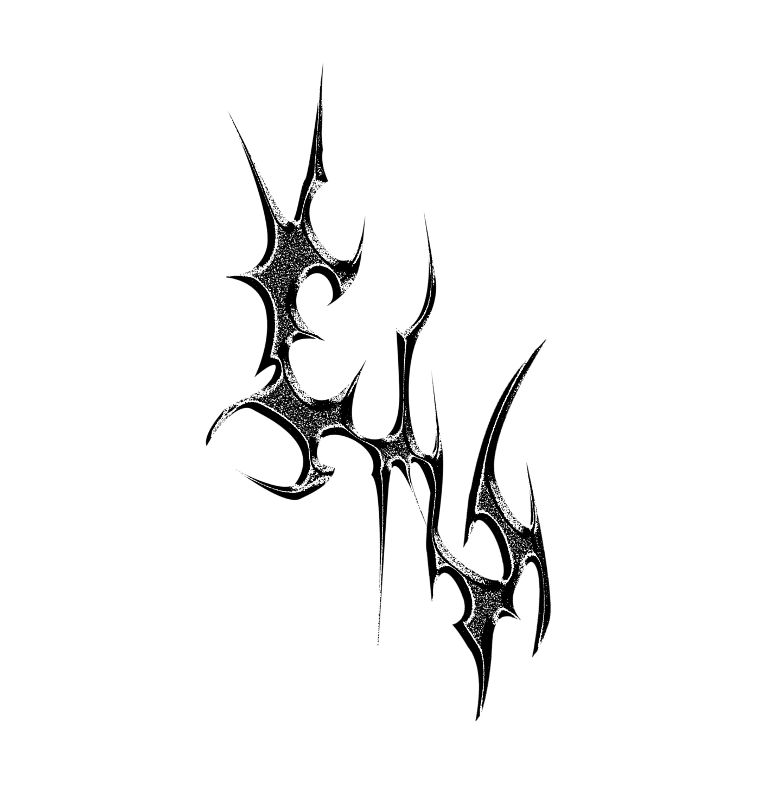
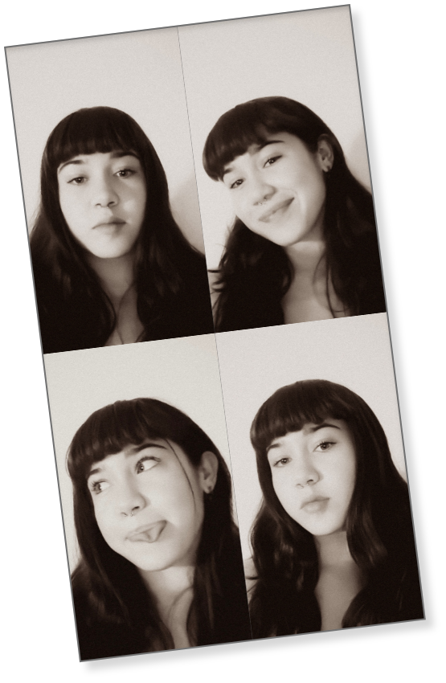

Project 01 FEB – JUN 2026
A FIELD APP AND STAFF DASHBOARD FOR THE HUMBER ARBORETUM, MADE AS PART OF MY GLOBAL ACTING IN IT MINOR.
Project 02 SEPT – JAN 2025–26
AN 18-WEEK INTERNSHIP: REBRANDING A COMPANY, FROM RESEARCH TO HANDOVER.
Project 03 FEB – MAR 2026
A WEBSITE FOR REIA MOTORS, A USED-CAR DEALER IN ARUBA, FROM CLIENT BRIEF TO A LIVE SITE WITH A CMS.

Hi, my name is Xinamayca and I’m an ICT & Media Design student in my last year at
Fontys Eindhoven. I’m a digital orchestrator, meaning I’m not boxed into one stage of
the process. With the tools available today, especially AI, I can move from creative
brainstorming all the way through to development, shaping an idea from spark to shipped
product. I’m strongest in UX/UI design, as you can see from my portfolio.
I like working on projects that push me outside my comfort zone and challenge my
creativity, especially ones that solve a social problem. I got to do exactly that during
my minor last semester, and also during my internship at Chromodynamics.
Right now, I’m doing Advanced Immersive Experience for my 7th semester, working with XR
technology for the first time, a challenge I’m excited for. I’m also currently looking
for a graduating internship where I can help build creative solutions and good user
experiences.
Outside of school, I practice Olympic weightlifting and I’m a big music enthusiast. I’m
also from Aruba, so I’m very in touch with my island vibes, and I bring that energy to a
team too, usually by (attempting) to make my colleagues laugh.
If you enjoyed my work, don’t be shy, connect with me on LinkedIn! I’d love to hear from you.

